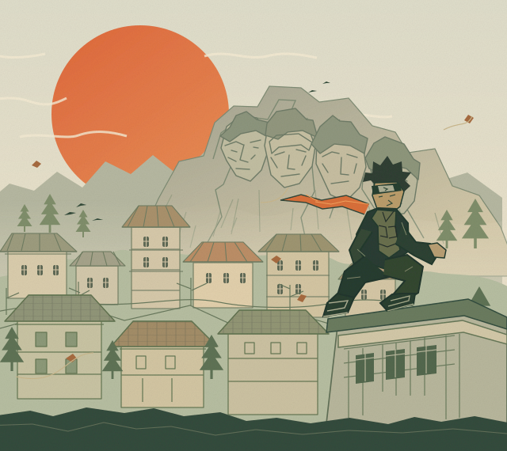

✦ SUPADA ITAMI / ZENKAI DE
MEIN WEG.
MEIN NINDŌ.*
Taijutsu. Raiton. Chakra. Gemeinsam wachsen.
Ich bin Supada Itami. Das ist mein Weg als Shinobi — festgehalten in 13 Berichten.
* Nindō — mein eigener Ninja-Weg.

KONOHA INSPIRED木ノ葉
35° 41′ N 139° 41′ E FIKTIVE WELT
✳DER WILLE DES FEUERS.
DER MUT, WEITERZUGEHEN.01—13
DER MUT, WEITERZUGEHEN.01—13
- NAME
- Supada Itami
- AKTUELLER RANG
- Chunin
- CHAKRA-ELEMENT
- Raiton
- TRAININGSFOKUS
- Taijutsu & Chakra
- MEINE AUFGABE
- Akademieschüler unterstützen
01 / MEINE ENTWICKLUNG
SCHRITT FÜR SCHRITT.↑
Ränge sind Meilensteine.
Der Weg dazwischen zählt.
01
DAS FUNDAMENT
Neuer Rang: Bestätigter Genin
ERREICHT
Der erste große Schritt auf meinem Ninja-Weg. Mein Rang als Genin ist bestätigt.
02AKTUELLER RANG
DAS NÄCHSTE KAPITEL
Neuer Rang: Chunin
ERREICHT
Ein neuer Rang. Neue Verantwortung. Seit dem 4. November geht mein Weg als Chunin weiter.
MEIN WEG GEHT WEITERGENIN CHUNIN · DAS NÄCHSTE ZIEL WARTET.
02 / DAS MISSIONSTAGEBUCH
MEINE BERICHTE.13
Die Rangdaten stehen fest. Tätigkeiten und weitere Berichte sind Textvorschläge, die du beim Lesen anpassen kannst.
Hier ist es noch still.
Für diese Suche gibt es keinen Bericht.
DEIN TRAINING. DEINE ENTWICKLUNG. DEIN WEG.
03 / MEIN NINDŌ„MEIN NÄCHSTER SCHRITT
↑„MEIN NÄCHSTER SCHRITT
IST IMMER NACH VORN.“
Ein Rang zeigt, wo ich stehe. Mein Wille zeigt, wohin ich gehe.